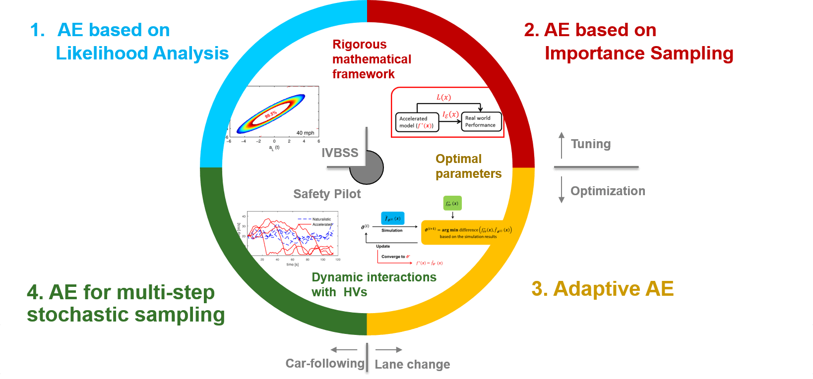
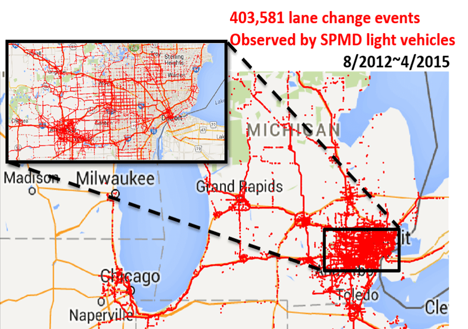
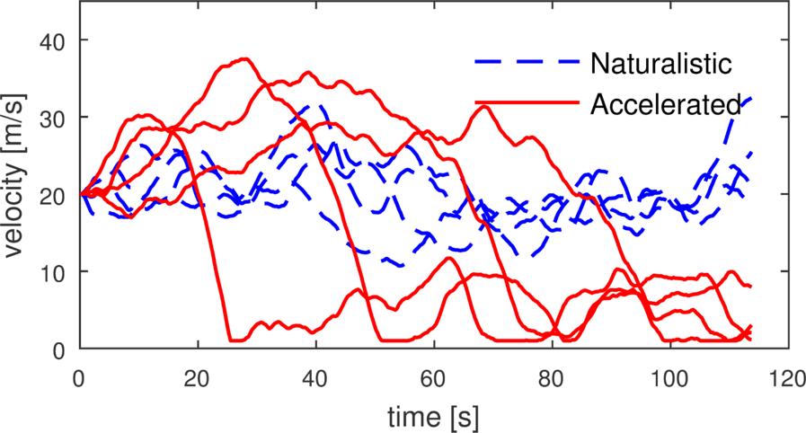
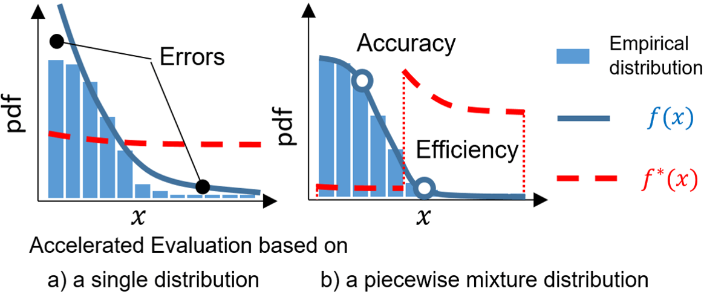
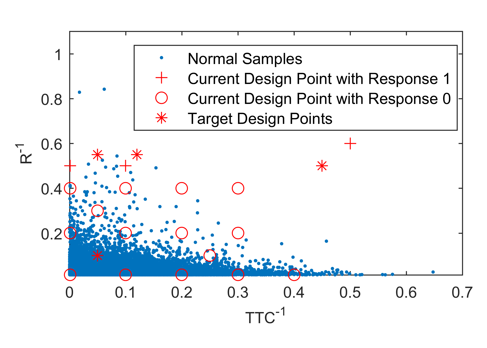

Accelerated Evaluation

How to explore limitation and evaluate potential risks of an intelligent physical system has been a growing issue in the fields of autonomous vehicles, drones, and smart home robotics. A new approach, called Accelerated Evaluation, was proposed to help solve this problem using synthesized approaches rooted in advanced statistics, modeling, optimization, control, and big data analysis. The basic idea is to model the operating environment and uncertainty using stochastic models. A learning-based sampling scheme then can be derived based on prior knowledge and performance in preliminary tests. By adaptively adjusting the sampling strategy, the cost for evaluation can be significantly reduced. I proposed this concept while working towards my Ph.D. I am still actively improving the methodology and extending its usage to broader conditions.

Zhao, Ding. "Accelerated Evaluation of Automated Vehicles." PhD dissertation, The University of Michigan, 2016. |
Abstract — Automated Vehicles (AVs), which monitor the driving environment and conduct some or all of the driving tasks, must be evaluated thoroughly before their release and deployment. The challenges of AV evaluation stem from two
facts. i) Crashes are exceedingly rare events. In the U.S., one needs to drive on average 530 thousand miles to experience a police-reported crash and nearly 100 million miles for a fatal crash. The low exposure to safety-critical scenarios makes
the Naturalistic-Field Operational Tests (NFOT) very time-consuming and expensive to conduct, in which prototype AVs are driven by volunteers or test engineers on public roads. ii) AVs can “cheat” to pass predefined tests. Traditionally, vehicle
test protocols and test conditions are pre-defined and fixed. This is not a problem when the vehicle is “dumb”, but becomes a problem when the vehicle is intelligent and can be customized to excel in the predefined tests, and performance in other
test conditions receives less attention. An evaluation approach that represents the real world but not as time-consuming as the N-FOT is needed to address the problems mentioned above.
In this research, we propose an “Accelerated Evaluation”
concept to accelerate the evaluations of AV by several orders of magnitude. The interactions between the AV and the surrounding Human-controlled Vehicles (HVs) are modeled based on the naturalistic driving data collected by the University of Michigan
Transportation Research Institute in the Safety Pilot Model Deployment Program and the Integrated Vehicle-Based Safety Systems Program. Probabilities of conflict, crash, and severe injury are used as the main metrics to assess the safety of AV designs.
In general, Accelerated Evaluation consists of six steps. ...
Accelerated Evaluation based on Important Sampling

Ding Zhao, Henry Lam, Huei Peng, David J. LeBlanc, Shan Bao, Kazutoshi Nobukawa, Christopher S. Pan, '' Accelerated Evaluation of Automated Vehicles Safety in Lane Change Scenarios Based on Importance Sampling Techniques ,''
IEEE Transactions on Intelligent Transportation Systems, vol. 18, no. 3, pp. 595-607, 2017. |
Ding Zhao, Huei Peng, Henry Lam, Shan Bao, Kazutoshi Nobukawa, David J. LeBlanc, Christopher S. Pan, ''Accelerated evaluation of automated vehicles in lane change scenarios, 2015,'' in Proceedings of the ASME 2015 Dynamic Systems and Control Conference (DSCC),
Columbus, U.S.A., Oct 28-30, 2015. |
Abstract — Automated vehicles (AVs) must be evaluated thoroughly before their release and deployment. A widely-used evaluation approach is the Naturalistic-Field Operational Test (N-FOT), which tests prototype vehicles directly on the
public roads. Due to the low exposure to safety-critical scenarios, N-FOTs are time-consuming and expensive to conduct. In this paper, we propose an accelerated evaluation approach for AVs. The results can be used to generate motions of the primary
other vehicles to accelerate the verification of AVs in simulations and controlled experiments. Frontal collision due to unsafe cut-ins is the target crash type of this paper. Human-controlled vehicles making unsafe lane changes are modeled as the
primary disturbance to AVs based on data collected by the University of Michigan Safety Pilot Model Deployment Program. The cut-in scenarios are generated based on skewed statistics of collected human driver behaviors, which generate risky testing
scenarios while preserving the statistical information so that the safety benefits of AVs in non-accelerated cases can be accurately estimated. The Cross Entropy method is used to recursively search for the optimal skewing parameters. The frequencies
of occurrence of conflicts, crashes and injuries are estimated for a modeled automated vehicle, and the achieved accelerated rate is around 2,000 to 20,000. In other words, in the accelerated simulations, driving for 1,000 miles will expose the
AV with challenging scenarios that will take about 2 to 20 million miles of real-world driving to encounter. This technique thus has the potential to reduce greatly the development and validation time for AVs.
Accelerated Evaluation in a Dynamic Environment

Ding Zhao, Xianan Huang, Huei Peng, Henry Lam, David J. LeBlanc, ''Accelerated Evaluation of Automated Vehicles in Car-Following Maneuvers,''
IEEE Transactions on Intelligent Transportation Systems, 2017. |
Ding Zhao, Huei Peng, Shan Bao, Kazutoshi Nobukawa, David J. LeBlanc, and Christopher S. Pan, ''Accelerated evaluation of automated vehicles using extracted naturalistic driving data,'' in 24th International Symposium on Dynamics of Vehicles on Roads and Tracks (IAVSD),
Graz, Austria, August 17-21, 2015. |
Abstract — The safety of Automated Vehicles (AVs) must be assured before their release and deployment. The current approach to evaluation relies primarily on (i) testing AVs on public roads or (ii) track testing with scenarios defined
in a test matrix. These two methods have completely opposing drawbacks: the former, while offering realistic scenarios, takes too much time to execute; the latter, though it can be completed in a short amount of time, has no clear correlation to
safety benefits in the real world. To avoid the aforementioned problems, we propose Accelerated Evaluation, focusing on the car-following scenario. The stochastic human-controlled vehicle (HV) motions are modeled based on 1.3 million miles of naturalistic
driving data collected by the University of Michigan Safety Pilot Model Deployment Program. The statistics of the HV behaviors are then modified to generate more intense interactions between HVs and AVs to accelerate the evaluation procedure. The
Importance Sampling theory was used to ensure that the safety benefits of AVs are accurately assessed under accelerated tests. Crash, injury and conflict rates for a simulated AV are simulated to demonstrate the proposed approach. Results show that
test duration is reduced by a factor of 300 to 100,000 compared with the non-accelerated (naturalistic) evaluation. In other words, the proposed techniques have great potential for accelerating the AV evaluation process.
Accelerated Evaluation using Piecewise Mixture to Emphasize Tail statistics

Zhiyuan Huang, Henry Lam, David J. LeBlanc, Ding Zhao, ''Accelerated Evaluation of Automated Vehicles using Piecewise Mixture Models,''
IEEE Transactions on Intelligent Transportation Systems, 2017. |
Zhiyuan Huang, Ding Zhao, Henry Lam, David J. LeBlanc, Huei Peng, ''Evaluation of Automated Vehicles in the Frontal Cut-in Scenario - an Enhanced Approach using Piecewise Mixture Model,''
IEEE International Conference on Robotics and Automation (ICRA), Singapore, May 29-June 3,2017. |
Abstract — The process to certify highly Automated Vehicles has not yet been defined by any country in the world. Currently, companies test Automated Vehicles on public roads, which is time-consuming and inefficient. We proposed the
Accelerated Evaluation concept, which uses a modified statistics of the surrounding vehicles and the Importance Sampling theory to reduce the evaluation time by several orders of magnitude, while ensuring the evaluation results are statistically
accurate. In this paper, we further improve the accelerated evaluation concept by using Piecewise Mixture Distribution models, instead of Single Parametric Distribution models. We developed and applied this idea to forward collision control system
reacting to vehicles making cut-in lane changes. The behavior of the cut-in vehicles was modeled based on more than 403,581 lane changes collected by the University of Michigan Safety Pilot Model Deployment Program. Simulation results confirm that
the accuracy and efficiency of the Piecewise Mixture Distribution method outperformed single parametric distribution methods in accuracy and efficiency, and accelerated the evaluation process by almost four orders of magnitude.
Generalized Accelerated Evaluation Approach with Gaussian Mixture Models and Monotonicity Information
 Zhiyuan Huang, Henry Lam, Ding Zhao, ''An Accelerated Testing Approach for Automated Vehicles with Background Traffic Described by Joint Distributions, '' Proceedings of the IEEE 20th International Intelligent Transportation Systems Conference (ITSC),
Yokohama, Japan, October 16-19, 2017. |
Zhiyuan Huang, Henry Lam, Ding Zhao, ''An Accelerated Testing Approach for Automated Vehicles with Background Traffic Described by Joint Distributions, '' Proceedings of the IEEE 20th International Intelligent Transportation Systems Conference (ITSC),
Yokohama, Japan, October 16-19, 2017. |
Abstract — This paper proposes a new framework based on Gaussian Mixture Model for evaluating risks of Automated Vehicles in a naturalistic driving environment. We extended the previous studies on the Accelerated Evaluation for Automated
Vehicles. The proposed procedure includes Gaussian Mixture Model fitting and Importance Sampling distribution construction for Gaussian Mixture Model. We define and exploit the monotonic property of the rare event set in constructing Importance
Sampling distribution. We present simulation results to confirm that the procedure is valid.
Towards Affordable On-track Testing with the Kriging Techniques

Zhiyuan Huang, Henry Lam, Ding Zhao,
''Towards Affordable On-track Testing for Autonomous Vehicle - A Kriging-based Statistical Approach, ''
Proceedings of the IEEE 20th International Intelligent Transportation Systems Conference (ITSC), Yokohama, Japan, October 16-19, 2017. |
Abstract — This paper discusses the use of Kriging model in Automated Vehicle evaluation. We explore how a Kriging model can help reduce the number of experiments or simulations in the Accelerated Evaluation procedure. We also propose
an adaptive sampling scheme for selecting samples to construct the Kriging model. Application examples in the lane change scenario are presented to illustrate the proposed methods.